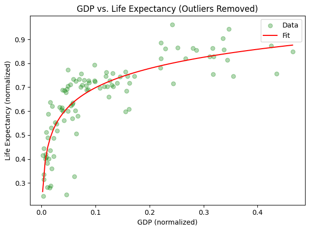
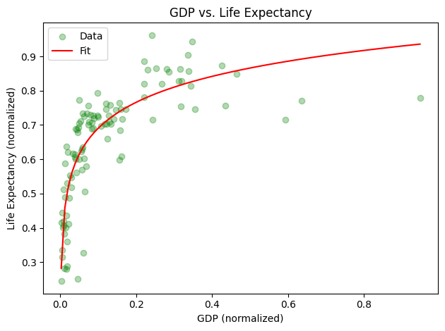
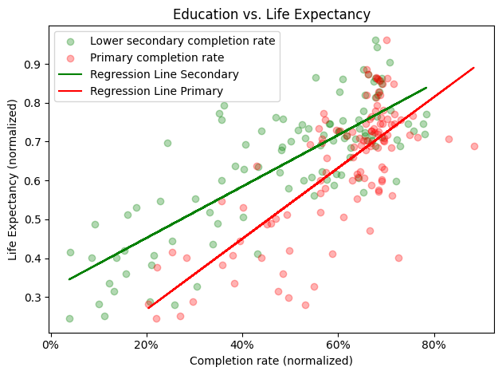
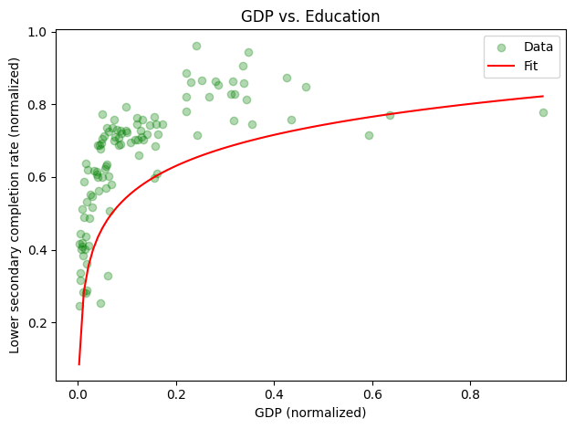

import pandas as pd
import geopandas as gpd
import numpy as np
import matplotlib.pyplot as plt
import matplotlib
from adjustText import adjust_text
import contextily as ctx
from sklearn.preprocessing import MinMaxScaler
from scipy.stats.mstats import winsorize
---------------------------------------------------------------------------
ModuleNotFoundError Traceback (most recent call last)
/tmp/ipykernel_10128/1897096616.py in <module>
1 import pandas as pd
----> 2 import geopandas as gpd
3 import numpy as np
4 import matplotlib.pyplot as plt
5 import matplotlib
ModuleNotFoundError: No module named 'geopandas'
# Read the data from the CSV file including 'Year' and 'Country'
df = pd.read_csv("merged_data.csv", usecols=['Year',"GDP", 'Country', "Value", " Indicator Name", " Indicator Code", 'Life expectancy'])
df = df[df[" Indicator Name"].str.contains("Lower secondary completion rate") | df[" Indicator Name"].str.contains("Primary completion rate")]
df = df[df[" Indicator Code"].str.contains("total") == True]
df.columns = df.columns.str.strip()
print(df.columns)
# Filter data for the year 2005 and drop duplicates
# df = df[df['Year'] == 2005].drop_duplicates()
# Debug: Print the filtered data
print("Filtered Data:")
print(df)
#
# Separate the columns to be normalized
columns_to_normalize = ['Value',"GDP", 'Life expectancy']
columns_not_to_normalize = ['Year', 'Country', 'Indicator Name', "Indicator Code" ]
# Create a MinMaxScaler object
scaler = MinMaxScaler()
# Fit and transform the data to be normalized
normalized_data = scaler.fit_transform(df[columns_to_normalize])
# Debug: Print the normalized data
print("\nNormalized Data:")
print(normalized_data)
# Create a DataFrame with the normalized data
normalized_df = pd.DataFrame(normalized_data, columns=columns_to_normalize)
# Combine the non-normalized columns with the normalized columns
final_df = pd.concat([df[columns_not_to_normalize].reset_index(drop=True), normalized_df], axis=1)
# Debug: Print the final DataFrame
print("\nFinal DataFrame:")
print(final_df)
# Save the normalized data to a new CSV file
final_df.to_csv("Normalized_Dataset_edu-prisectet.csv", index=False)
Index(['Country', 'Year', 'Life expectancy', 'Indicator Name',
'Indicator Code', 'Value', 'GDP'],
dtype='object')
Filtered Data:
Country Year Life expectancy Indicator Name \
88 Afghanistan 2015 65.0 Lower secondary completion rate
138 Afghanistan 2015 65.0 Primary completion rate
252 Afghanistan 2014 59.9 Lower secondary completion rate
302 Afghanistan 2014 59.9 Primary completion rate
416 Afghanistan 2013 59.9 Lower secondary completion rate
... ... ... ... ...
458846 Zimbabwe 2002 44.8 Primary completion rate
458960 Zimbabwe 2001 45.3 Lower secondary completion rate
459010 Zimbabwe 2001 45.3 Primary completion rate
459124 Zimbabwe 2000 46.0 Lower secondary completion rate
459174 Zimbabwe 2000 46.0 Primary completion rate
Indicator Code Value GDP
88 total (% of relevant age group) NaN 1886.692977
138 total (% of relevant age group) NaN 1886.692977
252 total (% of relevant age group) NaN 1897.525938
302 total (% of relevant age group) NaN 1897.525938
416 total (% of relevant age group) NaN 1874.765634
... ... ... ...
458846 total (% of relevant age group) 98.177948 2235.360895
458960 total (% of relevant age group) NaN 2421.530752
459010 total (% of relevant age group) NaN 2421.530752
459124 total (% of relevant age group) NaN 2344.271146
459174 total (% of relevant age group) 92.517868 2344.271146
[5376 rows x 7 columns]
Normalized Data:
[[ nan 0.01119344 0.54459203]
[ nan 0.01119344 0.54459203]
[ nan 0.01128114 0.44781784]
...
[ nan 0.01552339 0.17077799]
[ nan 0.01489791 0.18406072]
[0.63670994 0.01489791 0.18406072]]
Final DataFrame:
Year Country Indicator Name \
0 2015 Afghanistan Lower secondary completion rate
1 2015 Afghanistan Primary completion rate
2 2014 Afghanistan Lower secondary completion rate
3 2014 Afghanistan Primary completion rate
4 2013 Afghanistan Lower secondary completion rate
... ... ... ...
5371 2002 Zimbabwe Primary completion rate
5372 2001 Zimbabwe Lower secondary completion rate
5373 2001 Zimbabwe Primary completion rate
5374 2000 Zimbabwe Lower secondary completion rate
5375 2000 Zimbabwe Primary completion rate
Indicator Code Value GDP Life expectancy
0 total (% of relevant age group) NaN 0.011193 0.544592
1 total (% of relevant age group) NaN 0.011193 0.544592
2 total (% of relevant age group) NaN 0.011281 0.447818
3 total (% of relevant age group) NaN 0.011281 0.447818
4 total (% of relevant age group) NaN 0.011097 0.447818
... ... ... ... ...
5371 total (% of relevant age group) 0.676907 0.014016 0.161290
5372 total (% of relevant age group) NaN 0.015523 0.170778
5373 total (% of relevant age group) NaN 0.015523 0.170778
5374 total (% of relevant age group) NaN 0.014898 0.184061
5375 total (% of relevant age group) 0.636710 0.014898 0.184061
[5376 rows x 7 columns]
final_df = final_df[final_df['Year'] == 2010]
final_df.dropna(subset=['Value'], inplace=True)
final_df.dropna(subset=['GDP'], inplace=True)
final_df.to_csv("Normalized_Dataset_edu-prisectet.csv", index=False)
df = pd.read_csv("Normalized_Dataset_edu-prisectet.csv", usecols=['Year',"GDP", 'Country', "Value", "Indicator Name", "Indicator Code", 'Life expectancy'])
second_df = df[df["Indicator Name"].str.contains("Lower secondary completion rate") == True]
third_df = df[df["Indicator Name"].str.contains("Primary completion rate") == True]
second_df.to_csv("Normalized_Dataset_edu-prisectet1.csv", index=False)
third_df.to_csv("Normalized_Dataset_edu-prisectet2.csv", index=False)
import numpy as np
import pandas as pd
import plotly.graph_objs as go
from scipy.optimize import curve_fit
import matplotlib.pyplot as plt
# Assuming second_df and final_df are already defined DataFrames
# Define a logarithmic function for fitting
def log_func(x, a, b):
return a * np.log(x) + b
# Function to remove outliers based on z-score
def remove_outliers(df, column, z_score_threshold=3):
return df[(np.abs(df[column] - df[column].mean()) / df[column].std()) < z_score_threshold]
# Remove outliers from second_df
second_df_cleaned = remove_outliers(second_df, "GDP")
second_df_cleaned = remove_outliers(second_df_cleaned, "Life expectancy")
# Extract cleaned data for fitting
x_second_cleaned = second_df_cleaned["GDP"].values
y_second_cleaned = second_df_cleaned["Life expectancy"].values
# Fit the data to the logarithmic function
popt, pcov = curve_fit(log_func, x_second_cleaned, y_second_cleaned)
# Generate x values for the fitted line
x_fit = np.linspace(min(x_second_cleaned), max(x_second_cleaned), 100)
y_fit = log_func(x_fit, *popt)
# Plot using Plotly
scatter = go.Scatter(x=second_df_cleaned["GDP"], y=second_df_cleaned["Life expectancy"], mode='markers', name='Data')
line = go.Scatter(x=x_fit, y=y_fit, mode='lines', name='Fit', line=dict(color='red'))
layout = go.Layout(title='GDP vs. Life Expectancy (Outliers Removed)',
xaxis=dict(title='GDP (normalized)'),
yaxis=dict(title='Life Expectancy (normalized)'))
# Optionally, you can use matplotlib to show the fit
plt.scatter(second_df_cleaned['GDP'], second_df_cleaned['Life expectancy'], alpha=0.3, c='green', label='Data')
plt.plot(x_fit, y_fit, color='red', label='Fit')
plt.xlabel('GDP (normalized)')
plt.ylabel('Life Expectancy (normalized)')
plt.title('GDP vs. Life Expectancy (Outliers Removed)')
plt.legend()
plt.tight_layout()
plt.show()
import numpy as np
import pandas as pd
import plotly.graph_objs as go
from scipy.optimize import curve_fit
import matplotlib.pyplot as plt
# Assuming second_df and final_df are already defined DataFrames
# Define a logarithmic function for fitting
def log_func(x, a, b):
return a * np.log(x) + b
# Extract cleaned data for fitting
x_second_cleaned = second_df["GDP"].values
y_second_cleaned = second_df["Life expectancy"].values
# Fit the data to the logarithmic function
popt, pcov = curve_fit(log_func, x_second_cleaned, y_second_cleaned)
# Generate x values for the fitted line
x_fit = np.linspace(min(x_second_cleaned), max(x_second_cleaned), 100)
y_fit = log_func(x_fit, *popt)
# Plot using Plotly
scatter = go.Scatter(x=second_df["GDP"], y=second_df["Life expectancy"], mode='markers', name='Data')
line = go.Scatter(x=x_fit, y=y_fit, mode='lines', name='Fit', line=dict(color='red'))
layout = go.Layout(title='GDP vs. Life Expectancy (Outliers Removed)',
xaxis=dict(title='GDP (normalized)'),
yaxis=dict(title='Life Expectancy (normalized)'))
# Optionally, you can use matplotlib to show the fit
plt.scatter(second_df['GDP'], second_df['Life expectancy'], alpha=0.3, c='green', label='Data')
plt.plot(x_fit, y_fit, color='red', label='Fit')
plt.xlabel('GDP (normalized)')
plt.ylabel('Life Expectancy (normalized)')
plt.title('GDP vs. Life Expectancy')
plt.legend()
plt.tight_layout()
plt.show()


import matplotlib.ticker as mtick
plt.scatter(second_df['Value'], second_df['Life expectancy'], alpha=0.3, c='green', label='Lower secondary completion rate')
plt.scatter(third_df['Value'], third_df['Life expectancy'], alpha=0.3, c='red', label='Primary completion rate')
plt.xlabel('Completion rate (normalized)')
plt.ylabel('Life Expectancy (normalized)')
plt.title('Education vs. Life Expectancy')
x_clean = second_df['Value']
y_clean = second_df['Life expectancy']
# Performing linear regression
slope, intercept = np.polyfit(x_clean, y_clean, 1)
# Calculate the values of the regression line
regression_line = slope * x_clean + intercept
# Create a combined scatter plot with the regression line
plt.plot(x_clean, regression_line, color='green', label='Regression Line Secondary')
x_clean = third_df['Value']
y_clean = third_df['Life expectancy']
# Performing linear regression
slope, intercept = np.polyfit(x_clean, y_clean, 1)
# Calculate the values of the regression line
regression_line = slope * x_clean + intercept
ax = plt.subplot(1,1,1)
# Create a combined scatter plot with the regression line
ax.xaxis.set_major_formatter(mtick.PercentFormatter(1.0))
plt.plot(x_clean, regression_line, color='red', label='Regression Line Primary')
plt.legend()
plt.tight_layout()
plt.show()

def log_func(x, a, b):
return a * np.log(x) + b
# Extract cleaned data for fitting
x_second_cleaned = second_df["GDP"].values
y_second_cleaned = second_df["Value"].values
# Fit the data to the logarithmic function
popt, pcov = curve_fit(log_func, x_second_cleaned, y_second_cleaned)
# Generate x values for the fitted line
x_fit = np.linspace(min(x_second_cleaned), max(x_second_cleaned), 100)
y_fit = log_func(x_fit, *popt)
# Plot using Plotly
scatter = go.Scatter(x=second_df["GDP"], y=second_df["Value"], mode='markers', name='Data')
line = go.Scatter(x=x_fit, y=y_fit, mode='lines', name='Fit', line=dict(color='red'))
layout = go.Layout(title='GDP vs. Life Expectancy (Outliers Removed)',
xaxis=dict(title='GDP (normalized)'),
yaxis=dict(title='Completion rate (normalized)'))
# Optionally, you can use matplotlib to show the fit
plt.scatter(second_df['GDP'], second_df['Life expectancy'], alpha=0.3, c='green', label='Data')
plt.plot(x_fit, y_fit, color='red', label='Fit')
plt.xlabel('GDP (normalized)')
plt.ylabel('Lower secondary completion rate (normalized)')
plt.title('GDP vs. Education')
plt.legend()
plt.tight_layout()
plt.show()

import numpy as np
import pandas as pd
import plotly.graph_objs as go
from scipy.optimize import curve_fit
from scipy.stats import zscore
import matplotlib.pyplot as plt
def log_func(x, a, b):
return a * np.log(x) + b
# Example data frame (replace this with your actual data)
# second_df = pd.DataFrame({
# 'GDP': [...],
# 'Value': [...]
# })
# Calculate the z-scores of the data
second_df['z_score_GDP'] = zscore(second_df['GDP'])
second_df['z_score_Value'] = zscore(second_df['Value'])
# Define a threshold to identify outliers
threshold = 6
# Filter the data to remove outliers
filtered_df = second_df[(np.abs(second_df['z_score_GDP']) < threshold) & (np.abs(second_df['z_score_Value']) < threshold)]
# Extract cleaned data for fitting
x_cleaned = filtered_df["GDP"].values
y_cleaned = filtered_df["Value"].values
# Fit the data to the logarithmic function
popt, pcov = curve_fit(log_func, x_cleaned, y_cleaned)
# Generate x values for the fitted line
x_fit = np.linspace(min(x_cleaned), max(x_cleaned), 100)
y_fit = log_func(x_fit, *popt)
# Plot using Plotly
scatter = go.Scatter(x=filtered_df["GDP"], y=filtered_df["Value"], mode='markers', name='Data')
line = go.Scatter(x=x_fit, y=y_fit, mode='lines', name='Fit', line=dict(color='red'))
layout = go.Layout(title='GDP vs. Life Expectancy (Outliers Removed)',
xaxis=dict(title='GDP (normalized)'),
yaxis=dict(title='Completion rate (normalized)'))
# Optionally, you can use matplotlib to show the fit
plt.scatter(filtered_df['GDP'], filtered_df['Value'], alpha=0.3, c='green', label='Data')
plt.plot(x_fit, y_fit, color='red', label='Fit')
plt.xlabel('GDP (normalized)')
plt.ylabel('Lower secondary completion rate (normalized)')
plt.title('GDP vs. Education')
plt.legend()
plt.tight_layout()
plt.show()
/tmp/ipykernel_103850/2968504282.py:18: SettingWithCopyWarning:
A value is trying to be set on a copy of a slice from a DataFrame.
Try using .loc[row_indexer,col_indexer] = value instead
See the caveats in the documentation: https://pandas.pydata.org/pandas-docs/stable/user_guide/indexing.html#returning-a-view-versus-a-copy
/tmp/ipykernel_103850/2968504282.py:19: SettingWithCopyWarning:
A value is trying to be set on a copy of a slice from a DataFrame.
Try using .loc[row_indexer,col_indexer] = value instead
See the caveats in the documentation: https://pandas.pydata.org/pandas-docs/stable/user_guide/indexing.html#returning-a-view-versus-a-copy